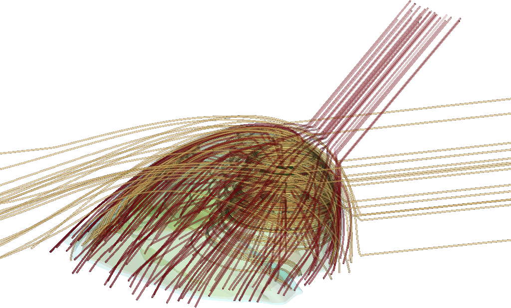

|
Stellar wind bubbles of OB stars as Galactic cosmic-ray re-accelerators
Meyer D. M.-A.
|
|
OB star bubble Gamma ray spectrum |
Cosmic rays are highly energetic messengers propagating in magnetized plasma, which are, possibly but not exclusively, accelerated at astrophysical shocks. Amongst the variety of astrophysical objects presenting shocks, the huge circumstellar stellar wind bubbles forming around very massive stars, are potential non-thermal emitters. We present the 1D magneto-hydrodynamical simulation of the evolving magnetized surroundings of a single, OB-type main-sequence 60Mo star, which is post-processed to calculate the re-acceleration of pre-existing non-thermal particles of the Galactic cosmic ray background. It is found that the forward shock of such circumstellar bubble can, during the early phase (1Myr) of its expansion, act as a substantial re-accelerator of pre-existing interstellar cosmic rays. This results in an increasing excess emission flux by a factor of 5, the hadronic component producing γ-rays by π0 decay being more important than those by synchrotron and inverse Compton radiation mechanisms. We propose that this effect is at work in the circumstellar environments of massive stars in general and we conjecture that other nebulae such as the stellar wind bow shocks of runaway massive stars also act as Galactic cosmic-ray re-accelerators. Particularly, this study supports the interpretation of the enhanced hadronic emission flux measured from the surroundings of κ Ori as originating from the acceleration of pre-existing particles at the forward shock of its wind bubble.
|
Discovery of an optical cocoon tail behind the runaway HD 185806
Spetsieri Z. T., Boumis P., Chiotellis A., Akras A., Derlopa S., Shetye S., Meyer D. M.-A., Bowman D. M., Gvaramadze V. V.
|
|
Coocon of HD 185806 |
Studies on the circumstellar structures around evolved stars provide vital information on the evolution of the parent
star and the properties of the local interstellar medium. In this work, we present the discovery and characterization
of an optical cocoon tail behind the star HD 185806.
The cocoon apex emission is puzzling, as it is detected in the infrared but shows no signal in the optical wavelength.
The Ha and [O iii] fluxes of the nebular structure vary from 2.7 to 8.5x10-12 erg s-1 cm-2 and from 0.9 to 7.0x10-13
erg s-1 cm-2, respectively. Through high-resolution spectroscopy, we derive the spectral type of the star, construct
the position-velocity diagrams of the cocoon tail for the Ha, [O iii] and [N ii] emission lines, and determine its velocity
in the range of -100 to 40 km s-1. Furthermore, we use SED fitting and MESA evolutionary models adopting a
distance of 900 pc, and classify HD 185806 as a 1.3 M star, in the transition phase between the RGB and early AGB
stages. Finally, we study the morpho-kinematic structure of the cocoon tail using the astronomical software SHAPE.
An ellipsoidal structure, with an inclination of 19 degree with respect to the plane of sky is found to better reproduce
the observed cocoon tail of HD 185806
|
Astrospheres of Planet-Hosting Cool Stars and Beyond. When Modeling Meets Observations
Herbst K., Baalman L. R., Bykov A., Engelbrecht E. N., Ferreira S. E. S., Izmodenov V. V., Korolkov S., Levenfish K. P.,
J. L. Linsky, Meyer D. M.-A.,, Scherer K., Du Toit Strauss R.
|
|
Astrophere of the Sun |
Thanks to dedicated long-term missions like Voyager and GOES over the past 50 years, much insight has been gained on
the activity of our Sun, the solar wind, its interaction with the interstellar medium, and, thus, about the formation,
the evolution, and the structure of the heliosphere. Additionally, with the help of multi-wavelength observations by
the Hubble Space Telescope, Kepler, and TESS, we not only were able to detect a variety of extrasolar planets and exomoons
but also to study the characteristics of their host stars, and thus became aware that other stars drive bow shocks and
astrospheres. Although features like, e.g., stellar winds, could not be measured directly, over the past years several
techniques have been developed allowing us to indirectly derive properties like stellar mass-loss rates and stellar wind
speeds, information that can be used as direct input to existing astrospheric modeling codes. In this review, the
astrospheric modeling efforts of various stars will be presented. Starting with the heliosphere as a benchmark of
astrospheric studies, investigating the paleo-heliospheric changes and the Balmer Ha projections to 1 pc, we investigate
the surroundings of cool and hot stars, but also of more exotic objects like neutron stars. While pulsar wind nebulae
(PWNs) might be a source of high-energy galactic cosmic rays (GCRs), the astrospheric environments of cool and hot stars
form a natural shield against GCRs. Their modulation within these astrospheres, and the possible impact of turbulence,
are also addressed. This review shows that all of the presented modeling efforts are in excellent agreement with currently
available observations.
|
3D MHD astrospheres: applications to IRC-10414 and Betelgeuse
Meyer D. M.-A., Mignone A., Petrov M., Scherer K., Velazquez P. F., Boumis P.
|
| 
3D MHD astrosphere of IRC-10414 |
A significative fraction of all massive stars in the Milky Way move
supersonically through their local interstellar medium (ISM), producing bow
shock nebulae by wind-ISM interaction. The stability of these observed
astrospheres around cool massive stars challenges precedent two-dimensional
(magneto-)hydrodynamical simulations of their surroundings. We present
three-dimensional magneto-hydrodynamical (3D MHD) simulations of the
circumstellar medium of runaway M-type red supergiant stars moving with
velocity v_star= 50 km/s. We treat the stellar wind with a Parker spiral and
assume a 7 microG magnetisation of the ISM. Our free parameter is the angle
theta_mag between ISM flow and magnetisation, taken to 0, 45 and 90 degrees. It
is found that simulation dimension, coordinate systems and grid effects can
greatly affect the development of the modelled astrospheres. Nevertheless, as
soon as the ISM flow and magnetisation directions differs by more than a few
degrees (theta_mag>5 degree), the bow shock is stabilised, most clumpiness and
ragged structures vanishing. The complex shape of the bowshocks induce
important projection effects, e.g. at optical Ha line, producing complex of
astrospheric morphologies. We speculate that those effects are also at work
around earlier-type massive stars, which would explain their diversity of their
observed arc-like nebula around runaway OB stars. Our 3D MHD models are fitting
well observations of the astrospheres of several runaway red supergiant stars.
The results interpret the smoothed astrosphere of IRC-10414 and Betelgeuse
aOri) are stabilised by an organised, non-parallel ambient magnetic field. Our
findings suggest that IRC-10414 is currently in a steady state of its
evolution, and that Betelgeuse's bar is of interstellar origin.
|
Bow shock nebulae of hot massive stars in a magnetized medium
Meyer D. M.-A., Mignone A., Kuiper R., Raga A., W. Kley
|
|
MHD bow shock of a runaway OB star |
A significant fraction of OB-type, main-sequence massive stars are classified
as runaway and move supersonically through the interstellar medium (ISM).
Their strong stellar winds interact with their surroundings where the
typical strength of the local ISM magnetic field is about 3.5-7 microG, which
can result in the formation of bow shock nebulae.
We investigate the effects of such magnetic fields, aligned with the motion of
the flow, on the formation and emission properties of these circumstellar structures.
Our axisymmetric, magneto-hydrodynamical simulations with optically-thin radiative
cooling, heating and anisotropic thermal conduction show that the
presence of the background ISM magnetic field affects the projected optical emission our bow
shocks at H$\alpha$ and [Oiii] 5007
which become fainter by about 1-2 orders of magnitude, respectively.
Radiative transfer calculations against dust opacity indicate that the magnetic
field slightly diminishes their projected infrared emission and that our bow
shocks emit brightly at 60 micron.
This may explain why the bow shocks generated
by ionizing runaway massive stars are often difficult to identify.
Finally, we discuss our results in the context of the bow shock of zeta Ophiuchi and
we support the interpretation of its imperfect morphology as an evidence of the presence
of an ISM magnetic field not aligned with the motion of its driving star.
|
On the observability of bow shocks of Galactic runaway OB stars
Meyer D. M.-A., van Marle A.-J., R. Kuiper, W. Kley
|
|
Emission map of an instable bow shock |
Massive stars ejected from their parent cluster and supersonically sailing
away through the interstellar medium (ISM) are classified as
exiled. They generate circumstellar bow shock nebulae that can be observed.
We present two-dimensional, axisymmetric hydrodynamical simulations of
a representative sample of stellar wind bow shocks from Galactic OB stars
in an ambient medium of densities ranging from n_ISM=0.01 up to
10.0 cm-3.
Independently of their location in the Galaxy, we confirm that the infrared is the
most appropriated waveband to search for bow shocks from massive stars.
Their spectral energy distribution is the convenient tool to analyze them
since their emission does not depend on the temporary effects which could
affect unstable, thin-shelled bow shocks.
Our numerical models of Galactic bow shocks generated by high-mass (40 Mo)
runaway stars yield Ha fluxes which could be observed by facilities such as the
SuperCOSMOS H-Alpha Survey. The brightest bow shock nebulae are produced in the
denser regions of the ISM.
We predict that bow shocks in the field observed at Ha by means of
Rayleigh-sensitive facilities are formed around stars of initial mass larger than
about 20 Mo.
Our models of bow shocks from OB stars have the emission maximum in the wavelength range
3<=50mu m which can be up to several orders of magnitude
brighter than the runaway stars themselves, particularly for stars of initial mass larger
than 20 Mo.
|
Interacting supernovae from photoionization-confined shells around red supergiant stars
Mackey J., Mohamed S., Gvaramadze V., Kotak R., Langer N., Meyer D., Moriya T., Neilson H.
|
|
Scheme of a PICO shell (S. Mohamed) |
Betelgeuse, a nearby red supergiant, is a fast-moving star with a powerful
stellar wind that drives a bowshock into its surroundings.This
picture has been challenged by the discovery of a dense and almost
static shell that is three times closer to the star than the bow shock
and has been decelerated by some external force. The two physically
distinct structures cannot both be formed by the hydrodynamic interaction
of the wind with the interstellar medium. Here we report that a
model in which Betelgeuse wind is photoionized by radiation from
external sources can explain the static shell without requiring a new
understanding of thebowshock. Pressure from the photoionizedwind
generates a standing shock in the neutral part of the wind and forms
an almost static, photoionization-confined shell. Other red supergiants
should have much more massive shells than Betelgeuse, because the
photoionization-confined shell traps up to 35 per cent of allmass lost
during the red supergiant phase, confining this gas close to the star
until it explodes. After the supernova explosion, massive shells dramatically
affect the supernova light curve, providing a natural explanation
for themany supernovae that have signatures of circumstellar
interaction.
|
Models of the circumstellar medium of massive runaway stars moving in the Galactic plane
Meyer D. M.-A., Mackey J., Langer N., Gvaramadze V. V., Mignone A., Izzard R. G., L. Kaper
|
|
Scaling of bow shock luminosities as a function of their volume |
At least 5 per cent of the massive stars are moving supersonically through the
interstellar medium (ISM) and are expected to produce a stellar wind bow shock.
We explore how the mass loss and space velocity of massive runaway stars affect
the morphology of their bow shocks. We run two-dimensional axisymmetric hydrodynamical simulations following the
evolution of the circumstellar medium of these stars in the Galactic plane from
the main sequence to the red supergiant phase. We find that thermal conduction
is an important process governing the shape, size and structure of the bow shocks around hot
stars, and that they have an optical luminosity mainly produced by forbidden
lines, e.g. [OIII]. The Ha emission of the bow shocks around hot
stars originates from near their contact discontinuity. The Ha emission
of bow shocks around cool stars originates from their forward shock, and is too
faint to be observed for the bow shocks that we simulate. The emission of
optically-thin radiation mainly comes from the shocked ISM material. All bow
shock models are brighter in the infrared, i.e. the infrared is the most
appropriate waveband to search for bow shocks. Our study suggests that the
infrared emission comes from near the contact discontinuity for bow shocks of
hot stars and from the inner region of shocked wind for bow shocks around cool
stars. We predict that, in the Galactic plane, the brightest, i.e. the most
easily detectable bow shocks are produced by high-mass stars moving
with small space velocities.
|
On the stability of bow shocks generated by red supergiants: the case of IRC-10414
Meyer D. M.-A., Gvaramadze V. V., Langer N., Mackey J., Boumis P., Mohamed S.
|
|
Line ratio map of IRC-10414 |
In this Letter, we explore the hypothesis that the smooth
appearance of bow shocks around some red supergiants (RSGs) might
be caused by the ionization of their winds by external sources of
radiation. Our numerical simulations of the bow shock generated by
IRC-10414 (the first-ever RSG with an optically detected bow
shock) show that the ionization of the wind results in its
acceleration by a factor of two, which reduces the difference
between the wind and space velocities of the star and makes the
contact discontinuity of the bow shock stable for a range of
stellar space velocities and mass-loss rates. Our best fit model
reproduces the overall shape and surface brightness of the
observed bow shock and shows that the bow shock emission comes
mainly from the shocked stellar wind. This naturally explains the
enhanced nitrogen abundance in the line-emitting material, derived
from the spectroscopy of the bow shock. We found that photoionized
bow shocks are ~10-100 times brighter in optical line
emission than their neutral counterparts, from which we conclude
that the bow shock of IRC-10414 must be photoionized.
|
IRC-10414: a bow-shock-producing red supergiant star
Gvaramadze V.V., Menten K.M., Kniazev A.Y., Langer N., Mackey J.,
Kraus A., Meyer D. M.-A.
|
 Infrared view of IRC-10414
Infrared view of IRC-10414 |
Most runaway OB stars, like the majority of massive stars residing in their parent
clusters, went during their lifetimes through the red supergiant (RSG) phase. Nonetheless,
although many dozens of massive runaways were found to be associated with bow
shocks, only two RSG bow-shock-producing stars, Betelgeuse and Cep, are known
to date. In this paper, we report the discovery of an arc-like nebula around the late
M-type star IRC-10414 using the SuperCOSMOS H-alpha Survey. Our spectroscopic
follow-up of IRC-10414 with the Southern African Large Telescope (SALT) showed
that it is a M7 supergiant, which supports previous claims on the RSG nature of this
star based on observations of its maser emission. We also got a SALT spectrum of
the arc-like nebula, which along with an estimate of the space velocity of its associ-
ated star imply the bow shock interpretation for the arc. This makes IRC-10414 the
third case of a bow-shock-producing RSG and the first one of an optical RSG bow
shock.
|
Double bow shocks around young, runaway red supergiants: application to Betelgeuse
Mackey J., Mohamed S., Neilson H. R., Langer N., Meyer D. M.-A.
|
|
Infrared image of Betelgeuse's bar |
A significant fraction of massive stars are moving supersonically through the interstellar medium (ISM), either due to disruption of a binary system or ejection from their parent star cluster. The interaction of the wind from such stars with the ISM produces a bow-shock. In late evolutionary stages these stars may undergo rapid transitions from red to blue and vice versa on the Hertzsprung-Russell diagram, with accompanying rapid changes to their stellar winds and bow-shocks. Our recent 3D simulations of the bow-shock produced by the nearby runaway red supergiant (RSG) Betelgeuse, under the assumption of a constant wind, indicate that the bow-shock is very young (younger than 30000 years old), hence Betelgeuse may have only recently become a RSG. To test this possibility, we have calculated stellar evolution models for single stars which match the observed properties of Betelgeuse in the RSG phase. The resulting evolving stellar wind is incorporated into 2D hydrodynamic simulations in which we model a runaway blue supergiant (BSG) as it undergoes the transition to a RSG near the end of its life. We find that the collapsing BSG wind bubble induces a bow-shock-shaped inner shell which at least superficially resembles Betelgeuse's bow-shock, and has a similar mass. Surrounding this is the larger-scale retreating bow-shock generated by the now defunct BSG wind's interaction with the ISM. We suggest that this outer shell could explain the bar feature located (at least in projection) just in front of Betelgeuse's bow-shock.
|
Credit image : NASA
|
|